Power Flow Module¶
This module provides functions for AC, DC and AC/DC power flow analysis.
functions are found in pyflow_acdc.ACDC_PF
Running the Power Flow¶
For a simple power flow, the function power_flow() can be used. This function will automatically detect the type of power flow to run (AC, DC or AC/DC) and will run the appropriate power flow.
- power_flow(grid, tol_lim=1e-10, maxIter=100)[source]¶
Run power flow on
grid, dispatching on its AC/DC content.Picks the AC-only, DC-only, or sequential AC/DC solver based on the grid’s
ACmode/DCmode. Results are written back onto the grid in place.- Parameters:
grid (Grid) – Network to solve (mutated in place).
tol_lim (float, optional) – Convergence tolerance on the mismatch.
maxIter (int, optional) – Maximum Newton iterations.
- Returns:
(elapsed_seconds, final_tolerance).- Return type:
tuple
Examples
>>> time, tol = pyf.power_flow(grid)
AC Power Flow¶
The AC power flow solution is based on [1], to solve the AC power flow Newton Raphson method is used. The equations involving \(P_{slack}\) and \(Q_{slack}\) of each separate AC grid ( \(\Gamma\) = number of AC grids) are not included. In addition, the Q equations of PV nodes are also not included.
The number of unknown variables for \(V_i\) and \(\theta_i\) are (\(|\mathcal{N}_{ac}| - \Gamma - PV\)) and (\(|\mathcal{N}_{ac}| - \Gamma\) ) respectively. These unknown variables are arranged into vectors \(\boldsymbol{\theta}\), \(|V|\), and the composite vector \(\boldsymbol{x}\).
The active power equations at each node i are:
The reactive power equations at each node i are:
These equations are combined into the function \(\boldsymbol{f(x)} = 0\):
The Jacobian matrix \(\boldsymbol{J}\) contains the first-order partial derivatives:
Where:
\(J_{11}\) (size \(|\mathcal{N}_{ac}|-\Gamma \times |\mathcal{N}_{ac}|-\Gamma\)) contains \(\partial P(x)/\partial \theta\):
\(J_{12}\) (size \(|\mathcal{N}_{ac}|-\Gamma \times |\mathcal{N}_{ac}|-\Gamma-PV\)) contains \(\partial P(x)/\partial V\):
\(J_{21}\) (size \(|\mathcal{N}_{ac}|-\Gamma-PV \times |\mathcal{N}_{ac}|-\Gamma\)) contains \(\partial Q(x)/\partial \theta\):
\(J_{22}\) (size \(|\mathcal{N}_{ac}|-\Gamma-PV \times |\mathcal{N}_{ac}|-\Gamma-PV\)) contains \(\partial Q(x)/\partial V\):
The Newton-Raphson iteration is then:
Running the AC Power Flow¶
- ac_power_flow(grid, tol_lim=1e-10, maxIter=100)[source]¶
Solve the AC-side Newton-Raphson power flow.
Builds
Ybus, solves the AC network, and writes bus voltages and line flows back ontogrid.- Returns:
(elapsed_seconds, final_tolerance).- Return type:
tuple
Examples
>>> time, tol = pyf.ac_power_flow(grid)
DC Power Flow¶
It is important to note that ‘DC power flow’ here specifically refers to the flow in DC grids and not to the linearized power flow that is often used as a simplification of AC grids.
The DC power flow solution is based on [2], to solve the DC power flow Newton Raphson method is used.
Similar to the AC power flow, the DC power flow is solved by Newton-Raphson method by defining a vector \(\boldsymbol{y}\):
With \(J_{DC}\), the Jacobian matrix of \(\boldsymbol{f(y)}\) considered as:
\(J_{DC}\) is a matrix of \(|\mathcal{N}_{dc}|-s_{DC}\) (\(s_{DC}\) is the number of DC slack buses)
In contrast to the AC Newton-Raphson, in the DC Newton-Raphson, the power target of the droop nodes changes each iteration.
Where \(P_{conv_0}\) is the target power in pu of the converter, \(U_i\) is the voltage of the DC bus in pu and \(\kappa\) the droop coefficient in \(P_{pu}/V_{pu}\). For the DC bus that are under droop control the Jacobian is also modified as follows:
Running the DC Power Flow¶
- dc_power_flow(grid, tol_lim=1e-10, maxIter=100, Droop_PF=True)[source]¶
Solve the DC-side power flow.
Writes DC bus voltages and line flows back onto
grid.- Parameters:
Droop_PF (bool, optional) – If
True, include droop-controlled nodes in the solve.- Returns:
(elapsed_seconds, final_tolerance).- Return type:
tuple
Examples
>>> time, tol = pyf.dc_power_flow(grid)
Sequential AC/DC Power Flow¶
Sequential AC/DC power flow is a method that solves the AC and DC power flows sequentially. It is a three-section process:
AC power flow: Solves the AC power flow equations for the AC grid.
Converter power flow: Solves the converter power flow equations.
DC power flow: Solves the DC power flow equations for the DC grid.
The sequential solver will compare the \(P_{conv}\) of converters in the AC grid until convergence is reached.

Sequential AC/DC Power Flow¶
Sequential AC/DC Power Flow¶
Running the Sequential AC/DC Power Flow¶
- acdc_sequential(grid, tol_lim=0.0001, maxIter=100, internal_tol=1e-08, change_slack2Droop=False, QLimit=False, Droop_PF=True)[source]¶
Solve a coupled AC/DC system by sequential iteration.
Alternates AC power flow, DC power flow, and converter solves until the outer AC/DC interface mismatch converges. Results are written back onto
gridin place.- Parameters:
tol_lim (float, optional) – Outer (interface) convergence tolerance.
internal_tol (float, optional) – Inner AC/DC solve tolerance.
change_slack2Droop (bool, optional) – Convert slack-controlled DC nodes to droop control during the solve.
QLimit (bool, optional) – Enforce converter reactive-power limits.
Droop_PF (bool, optional) – Include droop-controlled nodes in the DC solve.
- Returns:
(elapsed_seconds, final_tolerance, tolerance_tracker)wheretolerance_trackeris a dict of per-iteration convergence detail.- Return type:
tuple
Examples
>>> time, tol, ps_iterations = pyf.acdc_sequential(grid)
References